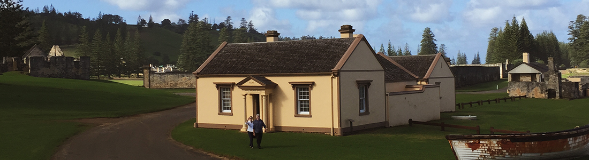

The Royal Engineer's Office
Locations of KAVHA
When was it built?
The Royal Engineer’s Office was built in 1850-1851. There was a stable for four horses built behind the Royal Engineer’s Office.
Its uses during the Second Settlement
The Royal Engineers were responsible for the design of many of the Kingston buildings. They worked with the Foreman of Works to ensure the buildings were built correctly.
The Royal Engineers also designed the roads, seawall, drainage systems, underground sewers and the pier. The fact that the pier, roads and seawall are still in use today is a proper memorial to the excellence of their work.
Its uses during the Third Settlement
The Royal Engineer’s Office was used as a private home and was purchased by the US Consular Agent in the 1890s and the Meade and Adams families lived there. In 1897 it was taken to be the home of a police constable and later became the home of the Signals Master. It was lived in by other families until the 1980s.
Its uses today
Today the Royal Engineer’s Office has been restored and is used as the REO Cafe. The stables are used as the public toilets.